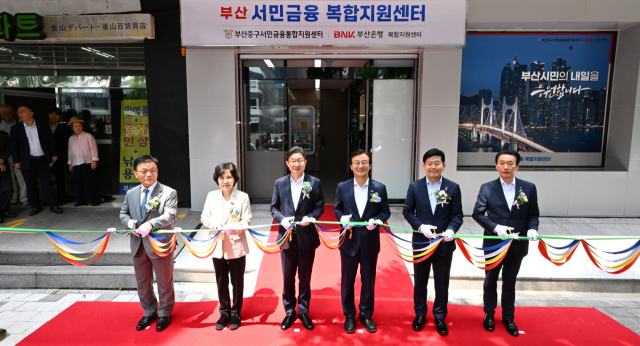

전국 첫 ‘부산 서민금융복합지원센터’ 개소 안내
작성일: 2026.07.03

전국 최초의 지역 밀착형 서민금융 복합지원센터가 부산 중구에서 문을 열었습니다.
부산 서민금융복합지원센터는 서민금융 상담, 채무조정, 복지·고용 연계 등 여러 지원을 한 곳에서 받을 수 있도록 마련된 원스톱 지원 공간입니다.
미소금융 부산중구법인은 앞으로도 정책서민금융이 필요한 분들에게 더 가까이 다가가고, 금융취약계층의 재기와 자립을 돕기 위해 현장 중심의 상담과 지원을 강화하겠습니다.
주요 내용
- 금융·복지·고용 연계 원스톱 상담 체계 구축
- 서민금융진흥원, 신용회복위원회, 부산은행, 미소금융법인 등 관계기관 입주
- 정책서민금융, 채무조정, 민간금융 연계 등 맞춤형 지원
- 부산을 시작으로 지역 밀착형 서민금융 모델 확산 기대
상담 및 심사 결과에 따라 지원 가능 여부와 한도가 달라질 수 있습니다.